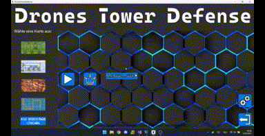

Multiplayer
Um mit anderen Spielern zu spielen, musst du dich im selben Netzwerk befinden. Um diesem Modus zu spielen, musst du angemeldet sein
Spiel erstellen
Klicke auf das Multiplayer-Menu und nun auf Erstellen. Hier kannst du auswählen, mit wieviel Leuten du spielen möchtest sowie auf welcher Map ihr spielen möchtet. Teile deine IP-Adresse den anderen Mitspielern mit
Spiel beitreten
Klicke auf das Multiplayer-Menu und nun auf Beitreten. Gib anschließend die IP-Adresse des Host ein und gehe nun wieder auf beitreten